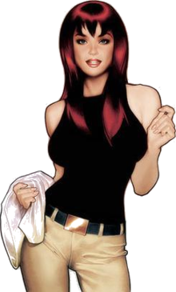

Mary Jane Watson was born to Philip and Madeline Watson. She is the seco nd of two children, with her elder sister Gayle having been born four y ears earlier. Due to her family's constant moving (as a result of her f ather's various teaching jobs), Mary Jane began developing a more extr overted and carefree personality, a trait which helped her make friend s as the Watson's moved from one location to the next. After Madeline left Philip, the Watson women stayed with various relatives. One such relative that Mary Jane was particularly fond of was her Aunt Anna, li ving in Queens, New York. On the night of Ben Parker's murder, Mary Ja ne spotted a frantic Peter running into his house, with Spider-Man eme rging from an upstairs window only moments later. At this, she deduced that Peter and Spider-Man were one and the same. Confused by the emot ions set off by the discovery, Mary Jane chose to keep this informati on to herself, and just like Peter refused to pursue a relationship w ith him, out of fear that he might neglect her for his super hero dut ies